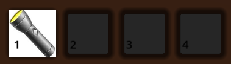
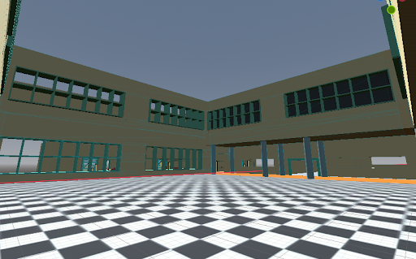
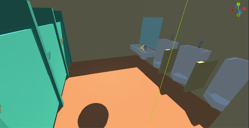
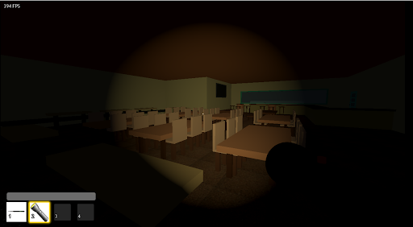
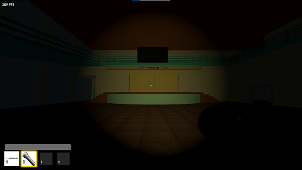
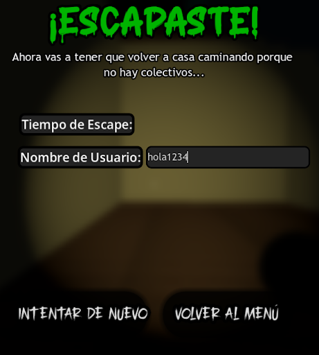
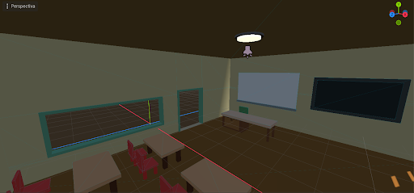
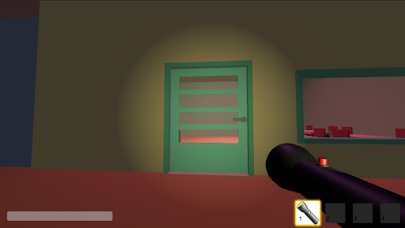

Datos Generales
InstituciónE.T. N°35 D.E. 18 "Ing. E. Latzina"
MateriaLab. de Algoritmos y Estructura de Datos
Motor & LenguajeGodot Engine 4.7.2 | GDScript
El Juego
Vas a jugar como un alumno del turno noche que durante la última clase va al baño del primer piso, pero cuando sale, se da cuenta que se demoró tanto que ya se fueron todos y quedó encerrado en el colegio.
OBJETIVO
Tras quedarte encerrado en el baño deberas encontrar un linterna para poder ver y encontrar una ganzua para poder salir.
ESCENARIOS REPRODUCIDOS
Replica de la escuela que trata de hacer sentir al que lo juega el .
Enlaces Oficiales
Integrantes y Tareas Realizadas
División: 4° 1°Ian Findlay
Creación del repositorio de GitHub, programación completa del sistema de inventario, interacción para agarrar y tirar objetos, y sistema para abrir puertas exclusivamente con llave.
Paul Álvarez
Administración del repositorio de GitHub, desarrollo y despliegue del sitio web oficial, diseño de la infografía del proyecto y creador del informe tecnico.
Benjamín Arregui
Modelado de gran parte del mapa del colegio, recreación de varias salas (incluyendo el baño) y lógica funcional de puertas.
Manuel Proserpio
Modelado de escenarios junto a Benjamín, mecánicas de movimiento y salto del personaje, y modelado 3D e implementación de la linterna.
Ignacio Saavedra
Implementación y ambientación de efectos de sonido, diseño y programación de las pantallas de interfaz (menú principal y menú de pausa).
Imágenes del Proyecto

Captura 1
Pantalla de carga al iniciar el juego.

Captura 2
Inventario del jugador.

Captura 3
Desarrollo del patio interior sin techo.

Captura 4
Modelado del baño superior.

Captura 5
Diseño del buffet de la escuela con sillas y mesas.

Captura 6
Patio techado y escenario.

Captura 7
Pantalla de escape al escapar de la escuela.

Captura 8
menú de pausa para guiar a los jugadores.

Captura 9
Menu principal.

Captura 10
Menu de ajustes de jugabilidad.

Captura 11
Diseño de las aulas.

Captura 12
Puertas de las aulas con script de abrirse.
Bibliografía
- Documentación Oficial de Godot Engine (4.x en español)docs.godotengine.org
- Referencia de GDScript (Godot Engine)docs.godotengine.org
- Aprende a programar con GDScriptdocs.godotengine.org
- Crear tu primer scriptdocs.godotengine.org
- Escuchando la entrada del jugadordocs.godotengine.org
- Aprende Godot - Curso completo desde cero (freeCodeCamp)YouTube
- Cómo hacer una puerta en Godotyoutube.com/watch?v=hNM6ETntl8g
- Curso de GDScript Básico para Godot 4YouTube
- Tutorial Godot 3D: Atmósfera de juego de terrorYouTube
- Godot Crear Botón con SonidoYouTube
- Transición al cambiar de escenaYouTube
- Pantalla Completa Opción TutorialYouTube
- Pantalla de CargaYouTube
- Contador de FPSYouTube